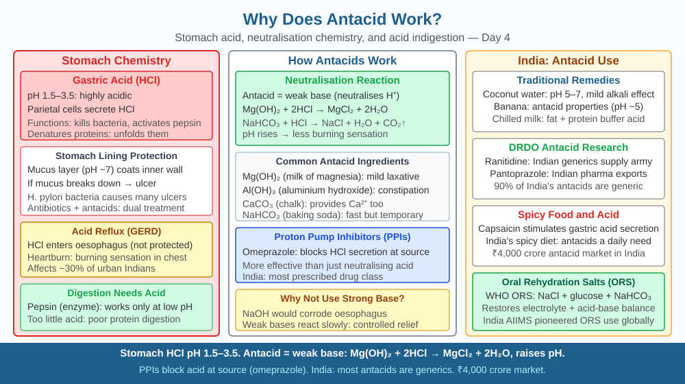

By the end of this lesson, you should be able to write the neutralisation equation for a common antacid, explain why the correct dose matters, and predict what happens to stomach pH and digestion if too much antacid is taken.
After a heavy meal — perhaps too much biryani or fried puri — a burning sensation rises from your stomach into your chest. You reach for a Digene tablet or Eno sachet, dissolve it in water, drink it, and within minutes the burning is gone. How does a small tablet neutralise the powerful hydrochloric acid in your stomach? And why does the packet warn you not to take too much?
Your stomach produces hydrochloric acid (HCl) — secreted by specialised parietal cells (also called oxyntic cells) in the stomach lining. Normal gastric pH sits between 1.5 and 3.5. This acid is essential: it activates the enzyme pepsinogen into its active form pepsin, which digests proteins; it kills most bacteria you swallow with food; and it creates the right environment for other digestive enzymes.
Why does excess acid cause burning? When too much HCl is produced — triggered by spicy food, caffeine, stress, or irregular meal times — or when the lower oesophageal sphincter (the valve between the oesophagus and stomach) doesn't close properly, acid enters the oesophagus. The oesophageal lining has no mucus protection against acid, so HCl begins to irritate and inflame the tissue — producing the sensation called acid reflux or heartburn.
How do antacids work? Antacids are weak bases — substances that react with HCl through a neutralisation reaction, consuming excess H⁺ ions and raising the stomach pH. The key chemical agents in common Indian antacids are:
1. Magnesium hydroxide — Mg(OH)₂ (present in Milk of Magnesia, Digene): Mg(OH)₂ + 2HCl → MgCl₂ + 2H₂O Magnesium hydroxide is a weak, slow-acting base. It raises pH gently and also acts as a mild laxative because Mg²⁺ ions draw water into the intestine.
2. Aluminium hydroxide — Al(OH)₃ (present in Gelusil, Digene): Al(OH)₃ + 3HCl → AlCl₃ + 3H₂O Aluminium hydroxide is slower-acting, provides longer relief, and tends to cause constipation — which is why it is often combined with magnesium hydroxide, whose laxative effect counterbalances this.
3. Sodium bicarbonate — NaHCO₃ (present in Eno, plain baking soda): NaHCO₃ + HCl → NaCl + H₂O + CO₂↑ Sodium bicarbonate is the fastest-acting antacid. It reacts immediately, producing CO₂ gas — which is why you burp after taking Eno. The CO₂ production also means the relief is shorter-lived, as a burst of gas carries some acid upward and the reaction is less sustained.
4. Calcium carbonate — CaCO₃ (present in Tums, some Digene formulations): CaCO₃ + 2HCl → CaCl₂ + H₂O + CO₂↑ Calcium carbonate also reacts quickly and provides calcium — but overuse can cause the stomach to rebound with even more acid production (acid rebound effect).
In every case, the mechanism is the same: H⁺ (from HCl) + OH⁻ or basic ion (from antacid) → water + salt. The antacid base consumes H⁺ ions, reducing their concentration and raising pH. As pH rises from ~2 toward ~4–5, the burning sensation disappears — because even pH 4 is much less damaging to the oesophageal tissue than pH 2.
Why does dose matter? The goal is to raise stomach pH from ~2 to approximately 3.5–5 — enough to relieve symptoms while still allowing digestion to continue. Pepsin works between pH 1.5 and 3.5; a slightly higher pH still permits some protein digestion. If too much antacid is taken, pH rises above 7 — the stomach becomes alkaline.
Think of the stomach as a container with a target pH range:
Each antacid compound contributes OH⁻ or carbonate (CO₃²⁻) ions that neutralise H⁺ ion by ion. The more antacid, the more H⁺ consumed, the higher the pH climbs. Understanding this lets you predict: the right dose raises pH to the symptom-free zone; too much pushes it into the over-alkaline zone.
The included SVG shows a cross-section of the stomach and lower oesophagus:

Antacid chemistry appears across several everyday situations in India:
Q3 predicted that taking too much antacid raises stomach pH above 7, causing the stomach to become too alkaline and disrupting digestion. Now extend that further:
When stomach pH rises significantly above 5, the stomach's parietal cells detect the lower acidity and receive a hormonal signal (via gastrin, a hormone released by G cells in the stomach wall) to produce more HCl. This is called acid rebound — the stomach fights back against the antacid by secreting more acid. This is why calcium carbonate antacids, despite being fast-acting, can cause worsening symptoms hours later.
Predict: If a person takes antacid every day for a month — keeping their stomach pH consistently high — what would happen to their body's natural acid production mechanism over time? Would they need more or less antacid over time, and why? Use the gastrin feedback loop to reason your answer.
How does antacid relieve acidity in the stomach?
Correct answer: c
Why is knowing the neutralisation mechanism more useful than just knowing antacids help?
Correct answer: a
What would happen if too much antacid were taken?
Correct answer: b
Explain today's concept to a younger student in 60 seconds without technical jargon. Then explain it again using the correct scientific vocabulary.
If both explanations describe the same mechanism, you have understood the concept rather than memorised it.
The stomach produces approximately 1.5–2 litres of hydrochloric acid per day. The concentration of HCl in gastric juice is about 0.5% by mass — which corresponds to a pH of 1.5 to 2. If you collected all the acid your stomach makes in a day and poured it on a piece of zinc metal, it would dissolve the zinc vigorously: Zn + 2HCl → ZnCl₂ + H₂↑. Your stomach produces this acid continuously and silently, and the mucus lining resists it without a single symptom — unless the balance tips.
Antacids work by supplying weak bases — Mg(OH)₂, Al(OH)₃, NaHCO₃, or CaCO₃ — that neutralise excess HCl through an acid-base reaction, raising stomach pH from around 2 to around 4, which relieves symptoms while still permitting digestion; taking too much pushes pH above 7 and disrupts all acid-dependent digestive processes.